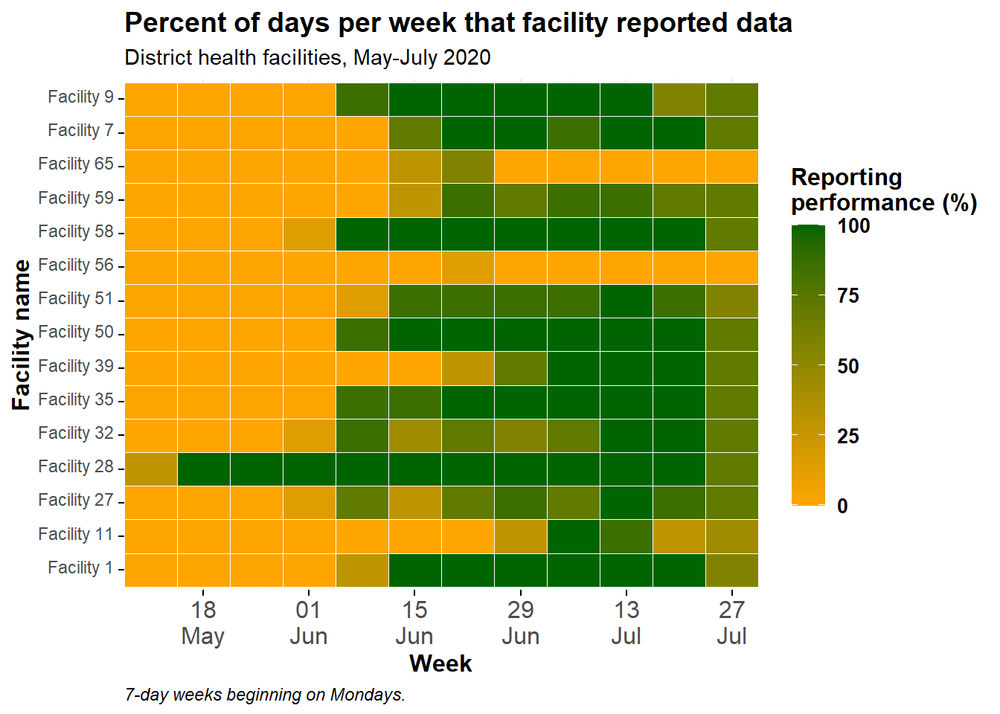

34 Heat plots
Heat plots, also known as “heat maps” or “heat tiles”, can be useful visualizations when trying to display 3 variables (x-axis, y-axis, and fill). Below we demonstrate two examples:
- A visual matrix of transmission events by age (“who infected whom”)
- Tracking reporting metrics across many facilities/jurisdictions over time


34.1 Preparation
Load packages
This code chunk shows the loading of packages required for the analyses. In this handbook we emphasize p_load() from pacman, which installs the package if necessary and loads it for use. You can also load installed packages with library() from base R. See the page on R basics for more information on R packages.
pacman::p_load(
tidyverse, # data manipulation and visualization
rio, # importing data
lubridate # working with dates
)Datasets
This page utilizes the case linelist of a simulated outbreak for the transmission matrix section, and a separate dataset of daily malaria case counts by facility for the metrics tracking section. They are loaded and cleaned in their individual sections.
34.2 Transmission matrix
Heat tiles can be useful to visualize matrices. One example is to display “who-infected-whom” in an outbreak. This assumes that you have information on transmission events.
Note that the Contact tracing page contains another example of making a heat tile contact matrix, using a different (perhaps more simple) dataset where the ages of cases and their sources are neatly aligned in the same row of the data frame. This same data is used to make a density map in the ggplot tips page. This example below begins from a case linelist and so involves considerable data manipulation prior to achieving a plotable data frame. So there are many scenarios to chose from…
We begin from the case linelist of a simulated Ebola epidemic. If you want to follow along, click to download the “clean” linelist (as .rds file). Import your data with the import() function from the rio package (it accepts many file types like .xlsx, .rds, .csv - see the Import and export page for details).
The first 50 rows of the linelist are shown below for demonstration:
linelist <- import("linelist_cleaned.rds")In this linelist:
- There is one row per case, as identified by
case_id
- There is a later column
infectorthat contains thecase_idof the infector, who is also a case in the linelist
Data preparation
Objective: We need to achieve a “long”-style data frame that contains one row per possible age-to-age transmission route, with a numeric column containing that row’s proportion of all observed transmission events in the linelist.
This will take several data manuipulation steps to achieve:
Make cases data frame
To begin, we create a data frame of the cases, their ages, and their infectors - we call the data frame case_ages. The first 50 rows are displayed below.
case_ages <- linelist %>%
select(case_id, infector, age_cat) %>%
rename("case_age_cat" = "age_cat")Make infectors data frame
Next, we create a data frame of the infectors - at the moment it consists of a single column. These are the infector IDs from the linelist. Not every case has a known infector, so we remove missing values. The first 50 rows are displayed below.
infectors <- linelist %>%
select(infector) %>%
drop_na(infector)Next, we use joins to procure the ages of the infectors. This is not simple, because in the linelist, the infector’s ages are not listed as such. We achieve this result by joining the case linelist to the infectors. We begin with the infectors, and left_join() (add) the case linelist such that the infector id column left-side “baseline” data frame joins to the case_id column in the right-side linelist data frame.
Thus, the data from the infector’s case record in the linelist (including age) is added to the infector row. The 50 first rows are displayed below.
infector_ages <- infectors %>% # begin with infectors
left_join( # add the linelist data to each infector
linelist,
by = c("infector" = "case_id")) %>% # match infector to their information as a case
select(infector, age_cat) %>% # keep only columns of interest
rename("infector_age_cat" = "age_cat") # rename for clarityThen, we combine the cases and their ages with the infectors and their ages. Each of these data frame has the column infector, so it is used for the join. The first rows are displayed below:
ages_complete <- case_ages %>%
left_join(
infector_ages,
by = "infector") %>% # each has the column infector
drop_na() # drop rows with any missing dataBelow, a simple cross-tabulation of counts between the case and infector age groups. Labels added for clarity.
table(cases = ages_complete$case_age_cat,
infectors = ages_complete$infector_age_cat)## infectors
## cases 0-4 5-9 10-14 15-19 20-29 30-49 50-69 70+
## 0-4 105 156 105 114 143 117 13 0
## 5-9 102 132 110 102 117 96 12 5
## 10-14 104 109 91 79 120 80 12 4
## 15-19 85 105 82 39 75 69 7 5
## 20-29 101 127 109 80 143 107 22 4
## 30-49 72 97 56 54 98 61 4 5
## 50-69 5 6 15 9 7 5 2 0
## 70+ 1 0 2 0 0 0 0 0We can convert this table to a data frame with data.frame() from base R, which also automatically converts it to “long” format, which is desired for the ggplot(). The first rows are shown below.
long_counts <- data.frame(table(
cases = ages_complete$case_age_cat,
infectors = ages_complete$infector_age_cat))Now we do the same, but apply prop.table() from base R to the table so instead of counts we get proportions of the total. The first 50 rows are shown below.
long_prop <- data.frame(prop.table(table(
cases = ages_complete$case_age_cat,
infectors = ages_complete$infector_age_cat)))Create heat plot
Now finally we can create the heat plot with ggplot2 package, using the geom_tile() function. See the ggplot tips page to learn more extensively about color/fill scales, especially the scale_fill_gradient() function.
- In the aesthetics
aes()ofgeom_tile()set the x and y as the case age and infector age
- Also in
aes()set the argumentfill =to theFreqcolumn - this is the value that will be converted to a tile color
- Set a scale color with
scale_fill_gradient()- you can specify the high/low colors- Note that
scale_color_gradient()is different! In this case you want the fill
- Note that
- Because the color is made via “fill”, you can use the
fill =argument inlabs()to change the legend title
ggplot(data = long_prop)+ # use long data, with proportions as Freq
geom_tile( # visualize it in tiles
aes(
x = cases, # x-axis is case age
y = infectors, # y-axis is infector age
fill = Freq))+ # color of the tile is the Freq column in the data
scale_fill_gradient( # adjust the fill color of the tiles
low = "blue",
high = "orange")+
labs( # labels
x = "Case age",
y = "Infector age",
title = "Who infected whom",
subtitle = "Frequency matrix of transmission events",
fill = "Proportion of all\ntranmsission events" # legend title
)
34.3 Reporting metrics over time
Often in public health, one objective is to assess trends over time for many entities (facilities, jurisdictions, etc.). One way to visualize such trends over time is a heat plot where the x-axis is time and on the y-axis are the many entities.
Data preparation
We begin by importing a dataset of daily malaria reports from many facilities. The reports contain a date, province, district, and malaria counts. See the page on Download handbook and data for information on how to download these data. Below are the first 30 rows:
facility_count_data <- import("malaria_facility_count_data.rds")Aggregate and summarize
The objective in this example is to transform the daily facility total malaria case counts (seen in previous tab) into weekly summary statistics of facility reporting performance - in this case the proportion of days per week that the facility reported any data. For this example we will show data only for Spring District.
To achieve this we will do the following data management steps:
- Filter the data as appropriate (by place, date)
- Create a week column using
floor_date()from package lubridate- This function returns the start-date of a given date’s week, using a specified start date of each week (e.g. “Mondays”)
- This function returns the start-date of a given date’s week, using a specified start date of each week (e.g. “Mondays”)
- The data are grouped by columns “location” and “week” to create analysis units of “facility-week”
- The function
summarise()creates new columns to reflecting summary statistics per facility-week group:- Number of days per week (7 - a static value)
- Number of reports received from the facility-week (could be more than 7!)
- Sum of malaria cases reported by the facility-week (just for interest)
- Number of unique days in the facility-week for which there is data reported
- Percent of the 7 days per facility-week for which data was reported
- Number of days per week (7 - a static value)
- The data frame is joined with
right_join()to a comprehensive list of all possible facility-week combinations, to make the dataset complete. The matrix of all possible combinations is created by applyingexpand()to those two columns of the data frame as it is at that moment in the pipe chain (represented by.). Because aright_join()is used, all rows in theexpand()data frame are kept, and added toagg_weeksif necessary. These new rows appear withNA(missing) summarized values.
Below we demonstrate step-by-step:
# Create weekly summary dataset
agg_weeks <- facility_count_data %>%
# filter the data as appropriate
filter(
District == "Spring",
data_date < as.Date("2020-08-01")) Now the dataset has nrow(agg_weeks) rows, when it previously had nrow(facility_count_data).
Next we create a week column reflecting the start date of the week for each record. This is achieved with the lubridate package and the function floor_date(), which is set to “week” and for the weeks to begin on Mondays (day 1 of the week - Sundays would be 7). The top rows are shown below.
agg_weeks <- agg_weeks %>%
# Create week column from data_date
mutate(
week = lubridate::floor_date( # create new column of weeks
data_date, # date column
unit = "week", # give start of the week
week_start = 1)) # weeks to start on Mondays The new week column can be seen on the far right of the data frame
Now we group the data into facility-weeks and summarise them to produce statistics per facility-week. See the page on Descriptive tables for tips. The grouping itself doesn’t change the data frame, but it impacts how the subsequent summary statistics are calculated.
The top rows are shown below. Note how the columns have completely changed to reflect the desired summary statistics. Each row reflects one facility-week.
agg_weeks <- agg_weeks %>%
# Group into facility-weeks
group_by(location_name, week) %>%
# Create summary statistics columns on the grouped data
summarize(
n_days = 7, # 7 days per week
n_reports = dplyr::n(), # number of reports received per week (could be >7)
malaria_tot = sum(malaria_tot, na.rm = T), # total malaria cases reported
n_days_reported = length(unique(data_date)), # number of unique days reporting per week
p_days_reported = round(100*(n_days_reported / n_days))) # percent of days reportingFinally, we run the command below to ensure that ALL possible facility-weeks are present in the data, even if they were missing before.
We are using a right_join() on itself (the dataset is represented by “.”) but having been expanded to include all possible combinations of the columns week and location_name. See documentation on the expand() function in the page on [Pivoting]. Before running this code the dataset contains nrow(agg_weeks) rows.
# Create data frame of every possible facility-week
expanded_weeks <- agg_weeks %>%
mutate(week = as.factor(week)) %>% # convert date to a factor so expand() works correctly
tidyr::expand(., week, location_name) %>% # expand data frame to include all possible facility-week combinations
# note: "." represents the dataset at that moment in the pipe chain
mutate(week = as.Date(week)) # re-convert week to class Date so the subsequent right_join worksHere is expanded_weeks:
Before running this code, agg_weeks contains nrow(agg_weeks) rows.
# Use a right-join with the expanded facility-week list to fill-in the missing gaps in the data
agg_weeks <- agg_weeks %>%
right_join(expanded_weeks) %>% # Ensure every possible facility-week combination appears in the data
mutate(p_days_reported = replace_na(p_days_reported, 0)) # convert missing values to 0 ## Joining, by = c("location_name", "week")After running this code, agg_weeks contains nrow(agg_weeks) rows.
Create heat plot
The ggplot() is made using geom_tile() from the ggplot2 package:
- Weeks on the x-axis is transformed to dates, allowing use of
scale_x_date()
location_nameon the y-axis will show all facility names
- The
fillisp_days_reported, the performance for that facility-week (numeric)
scale_fill_gradient()is used on the numeric fill, specifying colors for high, low, andNA
scale_x_date()is used on the x-axis specifying labels every 2 weeks and their format
- Display themes and labels can be adjusted as necessary
Basic
A basic heat plot is produced below, using the default colors, scales, etc. As explained above, within the aes() for geom_tile() you must provide an x-axis column, y-axis column, and a column for the the fill =. The fill is the numeric value that presents as tile color.
ggplot(data = agg_weeks)+
geom_tile(
aes(x = week,
y = location_name,
fill = p_days_reported))
Cleaned plot
We can make this plot look better by adding additional ggplot2 functions, as shown below. See the page on ggplot tips for details.
ggplot(data = agg_weeks)+
# show data as tiles
geom_tile(
aes(x = week,
y = location_name,
fill = p_days_reported),
color = "white")+ # white gridlines
scale_fill_gradient(
low = "orange",
high = "darkgreen",
na.value = "grey80")+
# date axis
scale_x_date(
expand = c(0,0), # remove extra space on sides
date_breaks = "2 weeks", # labels every 2 weeks
date_labels = "%d\n%b")+ # format is day over month (\n in newline)
# aesthetic themes
theme_minimal()+ # simplify background
theme(
legend.title = element_text(size=12, face="bold"),
legend.text = element_text(size=10, face="bold"),
legend.key.height = grid::unit(1,"cm"), # height of legend key
legend.key.width = grid::unit(0.6,"cm"), # width of legend key
axis.text.x = element_text(size=12), # axis text size
axis.text.y = element_text(vjust=0.2), # axis text alignment
axis.ticks = element_line(size=0.4),
axis.title = element_text(size=12, face="bold"), # axis title size and bold
plot.title = element_text(hjust=0,size=14,face="bold"), # title right-aligned, large, bold
plot.caption = element_text(hjust = 0, face = "italic") # caption right-aligned and italic
)+
# plot labels
labs(x = "Week",
y = "Facility name",
fill = "Reporting\nperformance (%)", # legend title, because legend shows fill
title = "Percent of days per week that facility reported data",
subtitle = "District health facilities, May-July 2020",
caption = "7-day weeks beginning on Mondays.")
Ordered y-axis
Currently, the facilities are ordered “alpha-numerically” from the bottom to the top. If you want to adjust the order the y-axis facilities, convert them to class factor and provide the order. See the page on Factors for tips.
Since there are many facilities and we don’t want to write them all out, we will try another approach - ordering the facilities in a data frame and using the resulting column of names as the factor level order. Below, the column location_name is converted to a factor, and the order of its levels is set based on the total number of reporting days filed by the facility across the whole time-span.
To do this, we create a data frame which represents the total number of reports per facility, arranged in ascending order. We can use this vector to order the factor levels in the plot.
facility_order <- agg_weeks %>%
group_by(location_name) %>%
summarize(tot_reports = sum(n_days_reported, na.rm=T)) %>%
arrange(tot_reports) # ascending orderSee the data frame below:
Now use a column from the above data frame (facility_order$location_name) to be the order of the factor levels of location_name in the data frame agg_weeks:
# load package
pacman::p_load(forcats)
# create factor and define levels manually
agg_weeks <- agg_weeks %>%
mutate(location_name = fct_relevel(
location_name, facility_order$location_name)
)And now the data are re-plotted, with location_name being an ordered factor:
ggplot(data = agg_weeks)+
# show data as tiles
geom_tile(
aes(x = week,
y = location_name,
fill = p_days_reported),
color = "white")+ # white gridlines
scale_fill_gradient(
low = "orange",
high = "darkgreen",
na.value = "grey80")+
# date axis
scale_x_date(
expand = c(0,0), # remove extra space on sides
date_breaks = "2 weeks", # labels every 2 weeks
date_labels = "%d\n%b")+ # format is day over month (\n in newline)
# aesthetic themes
theme_minimal()+ # simplify background
theme(
legend.title = element_text(size=12, face="bold"),
legend.text = element_text(size=10, face="bold"),
legend.key.height = grid::unit(1,"cm"), # height of legend key
legend.key.width = grid::unit(0.6,"cm"), # width of legend key
axis.text.x = element_text(size=12), # axis text size
axis.text.y = element_text(vjust=0.2), # axis text alignment
axis.ticks = element_line(size=0.4),
axis.title = element_text(size=12, face="bold"), # axis title size and bold
plot.title = element_text(hjust=0,size=14,face="bold"), # title right-aligned, large, bold
plot.caption = element_text(hjust = 0, face = "italic") # caption right-aligned and italic
)+
# plot labels
labs(x = "Week",
y = "Facility name",
fill = "Reporting\nperformance (%)", # legend title, because legend shows fill
title = "Percent of days per week that facility reported data",
subtitle = "District health facilities, May-July 2020",
caption = "7-day weeks beginning on Mondays.")
Display values
You can add a geom_text() layer on top of the tiles, to display the actual numbers of each tile. Be aware this may not look pretty if you have many small tiles!
The following code has been added: geom_text(aes(label = p_days_reported)). This adds text onto every tile. The text displayed is the value assigned to the argument label =, which in this case has been set to the same numeric column p_days_reported that is also used to create the color gradient.
ggplot(data = agg_weeks)+
# show data as tiles
geom_tile(
aes(x = week,
y = location_name,
fill = p_days_reported),
color = "white")+ # white gridlines
# text
geom_text(
aes(
x = week,
y = location_name,
label = p_days_reported))+ # add text on top of tile
# fill scale
scale_fill_gradient(
low = "orange",
high = "darkgreen",
na.value = "grey80")+
# date axis
scale_x_date(
expand = c(0,0), # remove extra space on sides
date_breaks = "2 weeks", # labels every 2 weeks
date_labels = "%d\n%b")+ # format is day over month (\n in newline)
# aesthetic themes
theme_minimal()+ # simplify background
theme(
legend.title = element_text(size=12, face="bold"),
legend.text = element_text(size=10, face="bold"),
legend.key.height = grid::unit(1,"cm"), # height of legend key
legend.key.width = grid::unit(0.6,"cm"), # width of legend key
axis.text.x = element_text(size=12), # axis text size
axis.text.y = element_text(vjust=0.2), # axis text alignment
axis.ticks = element_line(size=0.4),
axis.title = element_text(size=12, face="bold"), # axis title size and bold
plot.title = element_text(hjust=0,size=14,face="bold"), # title right-aligned, large, bold
plot.caption = element_text(hjust = 0, face = "italic") # caption right-aligned and italic
)+
# plot labels
labs(x = "Week",
y = "Facility name",
fill = "Reporting\nperformance (%)", # legend title, because legend shows fill
title = "Percent of days per week that facility reported data",
subtitle = "District health facilities, May-July 2020",
caption = "7-day weeks beginning on Mondays.")